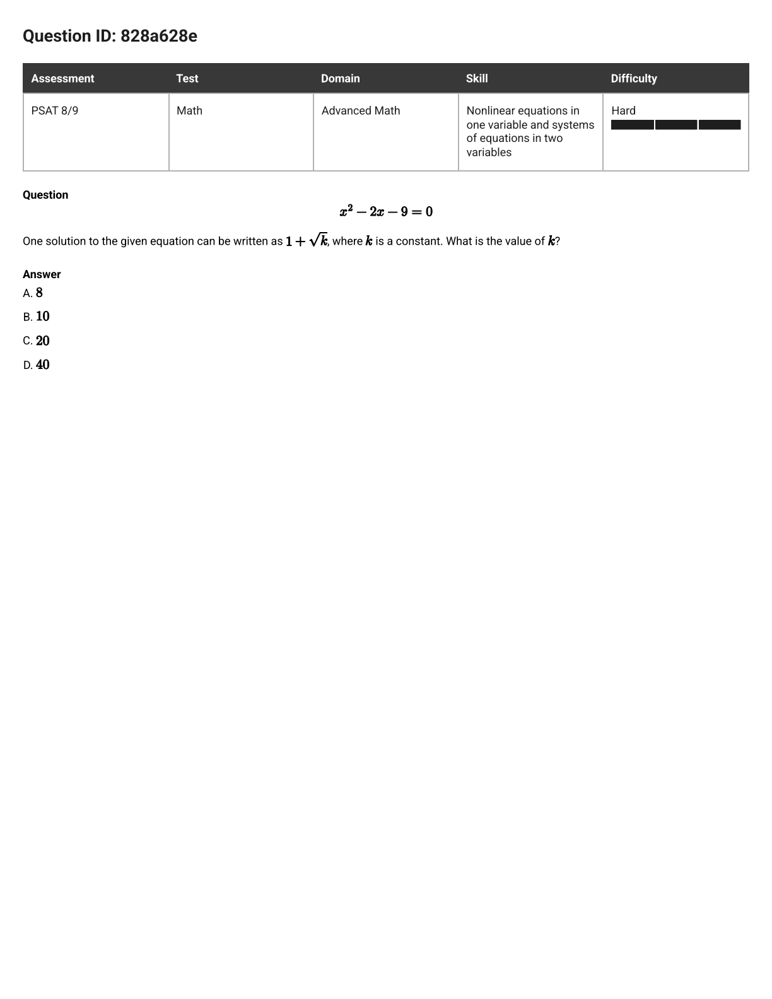
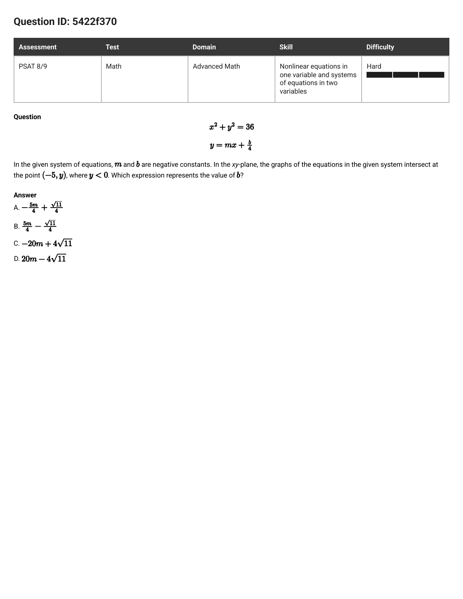
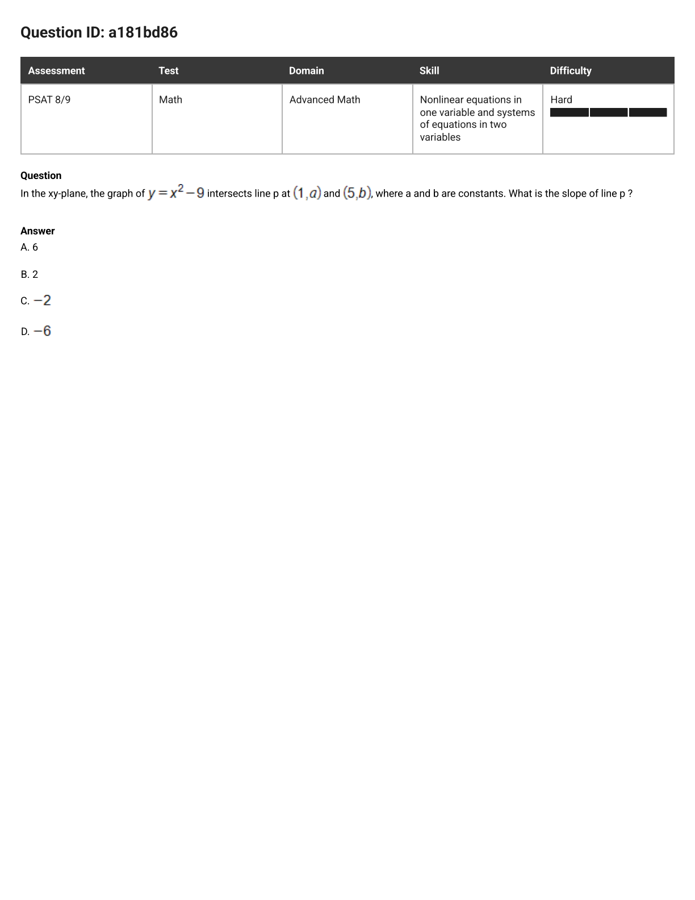
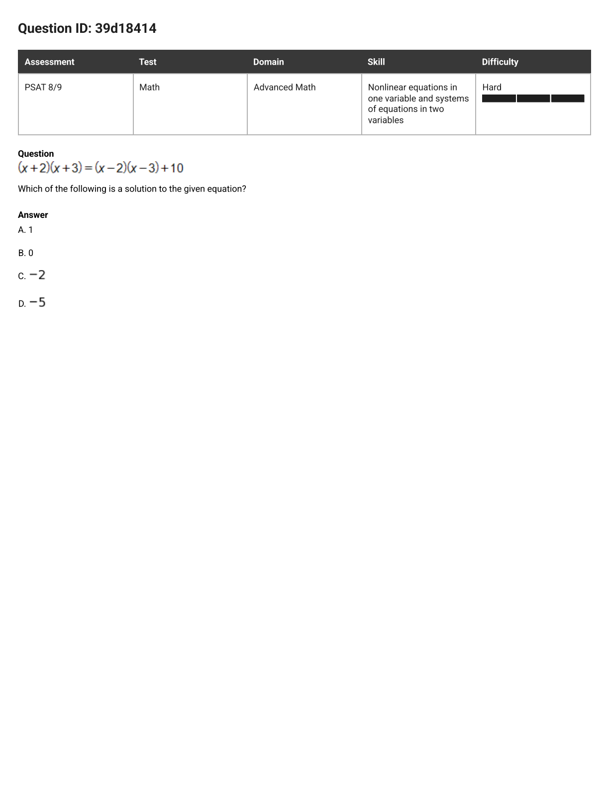
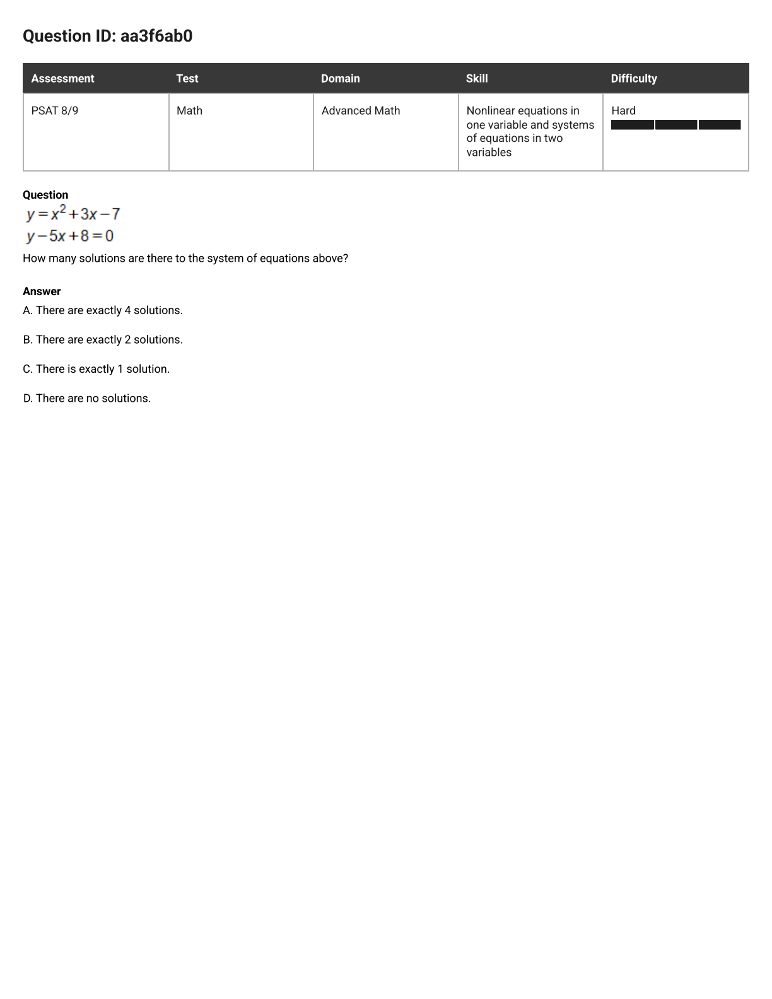
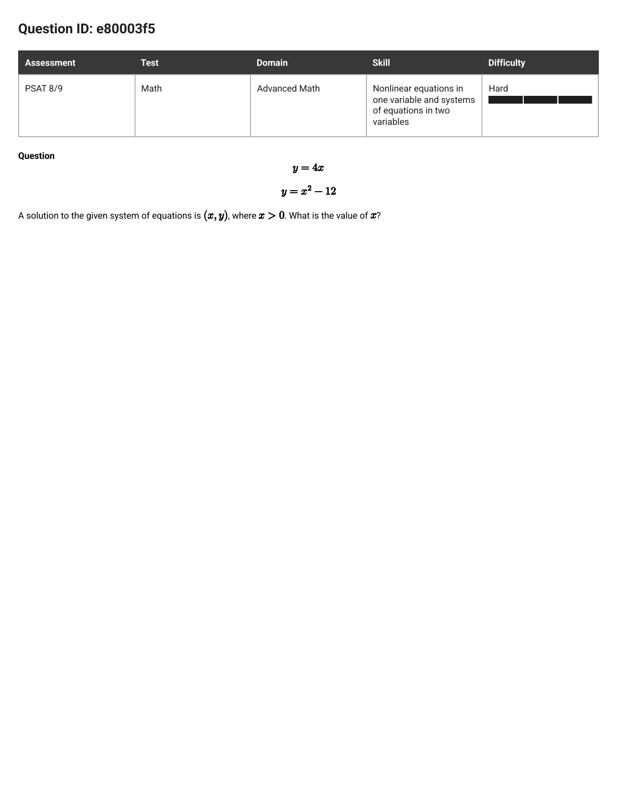
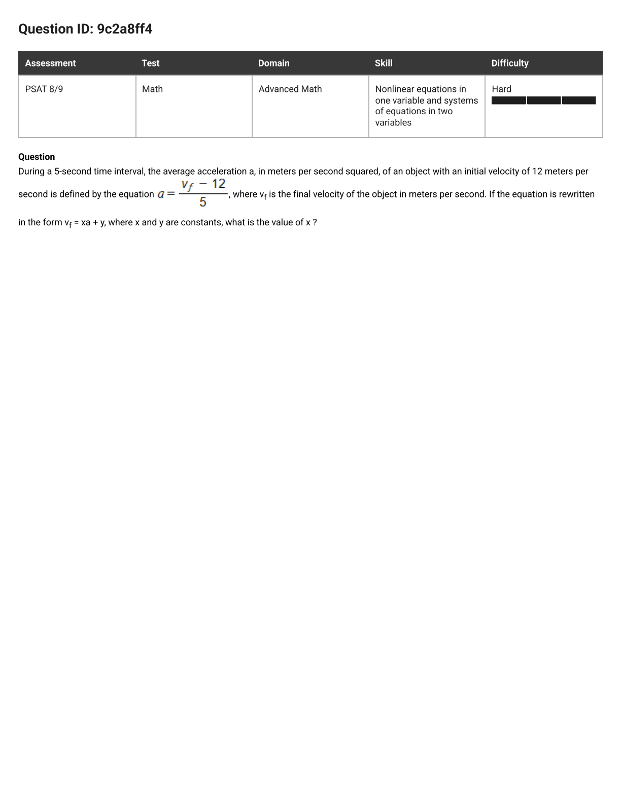
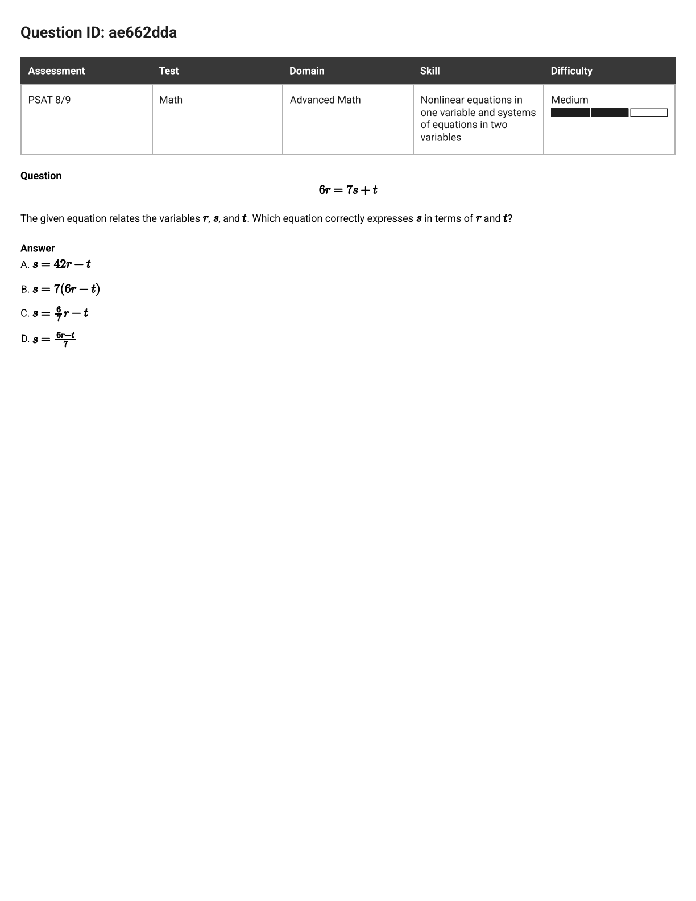
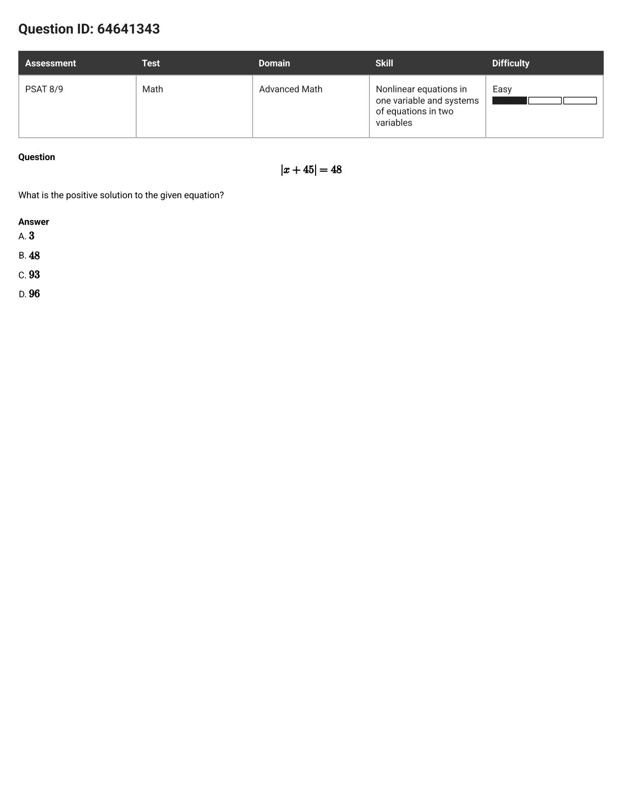

PSAT 8/9 · Nonlinear equations & systems · 11 misses, one model
Eleven misses in this skill. In ten of them the number you were supposed to write down is not the solution of the equation you end up solving — it's one step past it. A constant hiding inside a square root. One particular root out of two. A count. A sum. A slope. A letter set free. Your algebra was mostly fine. The last ten seconds weren't.
Read the last eight words of the question and box what they name. Not "solve this" — the actual named thing:
| What the question named | How often, here |
|---|---|
| a constant tucked inside the answer (k, c, b) | 3 |
| one particular root (the positive one, the one with y < 0) | 2 |
| a letter set free (s, n, vf) | 3 |
| a count, a sum, or a slope | 3 |
That box is where you return in Step 4. Everything between is bookkeeping.
Two equations? Substitute — never solve them side by side. A point handed to you? Plug it in. Two graphs crossing? Set the two expressions equal. You are done merging when exactly one letter you don't know is left in the line.
Open every bracket. Push everything to the left so the right is 0. Write the powers in order. Then stop and look at what survived.
You now have a root, or two roots, or a rearranged line. The question wanted the thing in your box. Hand over that. If your box says k and your paper says x = 1 + √10, the answer is 10, not 1 + √10.
Answered x. You handed in what your paper produced instead of what the question named. Gave a root when they asked for the sum of the roots; gave b/4 when they asked for b; gave 1/n when they asked for n. The single biggest killer in this cluster.
Dropped the ±. A square root or a set of bars made two answers and you kept the one the question banned. The banned root is almost always offered as a choice, and usually as its own size with the minus filed off.
Half-a-side. The × or ÷ reached one term and not the rest. 7s = 6r − t becoming s = 67r − t is the whole species in one line.
Flipped. Subtracted the wrong way round, or undid a ÷ with another ÷ instead of a ×. Gives you the right pieces with the wrong signs, or the right shape shrunk when it should have grown.
Minus eaten. 16 − (−8) quietly became 16 − 8. Sixteen units of answer, gone, with the working looking perfect.
Phantom quadratic. You reached for factoring or the quadratic formula on an equation whose x² cancels off both sides. Flatten first, then pick the tool.

The question as it appeared
One solution to the given equation can be written as 1 + √k, where k is a constant. What is the value of k?
In plain words: solve it, then reach one level deeper — they want the number under the root sign, not the root.
Box: k. Already flat, already swept to one side. Can it factor? You need two whole numbers that multiply to −9 and add to −2. Try them: −9 and 1 add to −8; −3 and 3 add to 0; −1 and 9 add to 8. Nothing. So complete the square.
Halve the middle number (−2 → −1), square it (1), add it to both sides:
Square-root both sides — and the ± is born: x − 1 = ±√10, so x = 1 ± √10.
They wrote the solution as 1 + √k. You have 1 + √10. Line them up and k = 10. The ± doesn't matter here — they only claimed one solution has that shape, and the plus one does.
B — 10.
Because (1 + √k)² − 2(1 + √k) − 9 collapses to k − 10, each choice's leftover is just k − 10 — which is why the wrong ones miss by so much.
| Choice | k | What 1 + √k leaves | |
|---|---|---|---|
| A | 8 | −2 | dead |
| B | 10 | 0 | ✓ |
| C | 20 | 10 | dead |
| D | 40 | 30 | dead |
Flipped. You completed the square but moved the +1 the wrong way: 9 − 1 = 8 instead of 9 + 1 = 10. Adding 1 to the left means adding 1 to the right. Kill in ten seconds: 8 leaves −2, not 0.
Half-a-side. Quadratic formula route: x = (2 ± √40) / 2. The ÷2 has to divide √40, not the 40 sitting under it. Halving what's inside a root is not halving the root. Kill: 20 leaves 10.
Answered x. Same quadratic formula, and you read √40 off the page before the ÷2 was done. 40 is a real number in your working — it's just not the one they boxed. Kill: 40 leaves 30, the worst miss on the board.

The question as it appeared
In the given system of equations, m and b are negative constants. In the xy-plane, the graphs of the equations in the given system intersect at the point (−5, y), where y < 0. Which expression represents the value of b?
In plain words: the point is on both graphs, so feed it to both — the circle gives you y, the line gives you b.
Box the ask: b. The point (−5, y) sits on the circle and on the line. The circle knows nothing about m or b, so start there:
Square root — and there's the ±: y = ±√11. Now the second circled phrase earns its keep. The card says y < 0, so y = −√11. The +√11 is dead — and it is sitting right there in choice A.
Move the −5m across by adding 5m to both sides:
This is where the question was won or lost. To turn b/4 into b you multiply by 4 — and the 4 has to reach both terms:
D — 20m − 4√11.
Test it with a real number: let m = −1 (negative, as required). Then b = −20 − 4√11 ≈ −33.27, so b/4 ≈ −8.32. The line at x = −5 gives y = 5 − 8.32 = −3.32 — which is −√11. And 25 + 11 = 36, so the point really is on the circle. Both equations satisfied.
Dropped the ±. The tell is the +√11: this is the branch where you took y = +√11 and ignored the words y < 0. Kill in five seconds: with m negative every term of A is positive, and b is supposed to be negative.
Answered x. This is exactly (5m − √11)/4 — the right numbers, still wearing the divided-by-4 that belonged to b/4. You solved for the thing the line handed you rather than the thing the question named. Kill: if it has a 4 underneath, it isn't b.
Flipped. Right size (the ×4 happened), every sign backwards — it's D with a minus out front, which is what you get if the −5m crosses the equals sign without changing sign. Kill: with m negative, C comes out positive.

The question as it appeared
In the xy-plane, the graph of y = x² − 9 intersects line p at (1, a) and (5, b), where a and b are constants. What is the slope of line p?
In plain words: "intersects at" means both points are on the parabola — so the parabola tells you their heights, and two points make a slope.
Box the ask: the slope of line p. Nobody gave you line p's equation and nobody has to — two points are enough.
Both points sit on y = x² − 9, so plug the x-values in:
The two points are (1, −8) and (5, 16).
Subtracting a negative adds. 16 − (−8) = 24, not 8. That one keystroke is the entire difference between the right answer and choice B.
A — 6.
Check: a line through (1, −8) with slope 6 is y = 6x − 14. At x = 5: 30 − 14 = 16 ✓.
Minus eaten. 16 − (−8) written as 16 − 8 = 8, then 8 ÷ 4 = 2. Everything else was right. Kill: a line of slope 2 through (1, −8) reaches −8 + 2(4) = 0 at x = 5, not 16.
Minus eaten, then Flipped. B with the subtraction done in the wrong order as well. Kill: negative slope means the line falls, and this one climbs from −8 to 16.
Flipped. The right 24 and the right 4, divided the wrong way round: (a − b) / (5 − 1). Rise and run have to be read in the same direction — if the top is "later minus earlier", so is the bottom. Kill: same as C, the line climbs.
Five more of your misses, then two easy ones to prove the habit sticks. For each: box the ask first, then Merge → Flatten → Crack → Cash. The reveal names the step that did the work.
39d18414 · Hard · your miss

Which of the following is a solution to the given equation?
A — 1. FLATTEN did all of it. Expand both sides: x² + 5x + 6 = x² − 5x + 16. Now look: there's an x² on both sides. Cross them out and the whole thing is linear — 10x = 10, so x = 1. Reaching for factoring here is the Phantom quadratic; there is nothing to factor. Check: (3)(4) = 12 and (−1)(−2) + 10 = 12 ✓. The other three leave the two sides unequal (0 gives 6 vs 16; −2 gives 0 vs 30; −5 gives 6 vs 66).
aa3f6ab0 · Hard · your miss

How many solutions are there to the system of equations above?
C — There is exactly 1 solution. MERGE then FLATTEN. Rearrange the second line to y = 5x − 8 and set the two y's equal: x² + 3x − 7 = 5x − 8. Sweep left: x² − 2x + 1 = 0, which is (x − 1)² = 0 — a perfect square, so the two roots landed on top of each other. One x, one point. Then CASH: they asked how many, not what, so you never compute y at all. A parabola and a line can meet 2, 1 or 0 times — never 4, which kills A on sight.
e80003f5 · Hard · your miss · grid-in (type the number)

A solution to the given system of equations is (x, y), where x > 0. What is the value of x?
6. MERGE: both equal y, so 4x = x² − 12. FLATTEN: x² − 4x − 12 = 0. CRACK: two numbers multiplying to −12 and adding to −4 are −6 and +2, so (x − 6)(x + 2) = 0 and x = 6 or x = −2. CASH: the words x > 0 exist only to ban −2 — typing −2 here is the Dropped the ± trap in its purest form. Check: x = 6 gives y = 24 from the line and 36 − 12 = 24 from the curve ✓.
9c2a8ff4 · Hard · your miss · grid-in (type the number)

During a 5-second time interval, the average acceleration a, in meters per second squared, of an object with an initial velocity of 12 meters per second is defined by the equation a = vf − 125, where vf is the final velocity of the object in meters per second. If the equation is rewritten in the form vf = xa + y, where x and y are constants, what is the value of x?
5. The joke version of this page's title: here they do say x — and x still isn't a solution, it's a coefficient. CRACK by undoing in reverse: multiply the whole side by 5 → 5a = vf − 12, then add 12 → vf = 5a + 12. CASH: line that up against vf = xa + y. The thing multiplying a is 5, so x = 5. (12 is y — a real number in the problem, and a wrong answer. So is the 5-second interval, which is where the 5 came from in the first place.)
ae662dda · Medium · your miss

The given equation relates the variables r, s, and t. Which equation correctly expresses s in terms of r and t?
D. CRACK, one line: subtract t to get 7s = 6r − t, then divide the whole side by 7. C is Half-a-side — the 7 got under the 6r and never reached the t. A and B are Flipped: they multiply by 7 where you have to divide. Ten-second kill: pick easy numbers. Let r = 2 and t = 2, so 12 = 7s + 2 and s = 10/7. D gives (12 − 2)/7 = 10/7 ✓. C gives 12/7 − 2 = −2/7, A gives 82, B gives 70. All dead in one substitution.
64641343 · Easy · warm-up (you haven't seen this one)

What is the positive solution to the given equation?
A — 3. CRACK: bars split into two equations. x + 45 = 48 gives x = 3; x + 45 = −48 gives x = −93. CASH: the word "positive" is there to pick one — that's 3. C is the popular wrong answer for two reasons at once: it's 48 + 45 (a Flipped, adding where you subtract) and it's the size of the banned root with the minus filed off (Dropped the ±). B is just the number on the right of the equals sign. Check: |3 + 45| = 48 ✓.
8b49ee2b · Easy · warm-up (you haven't seen this one)
Which value is a solution to the given equation?
B — 4. FLATTEN before you split. Get the bars alone first: |p| = 4. Then crack them open: p = 4 or p = −4. Both are real solutions and only 4 is offered, so no ± drama here. A is Half-a-side (dividing by 61 when 61 was added, not multiplied); C is 65 + 61, a Flipped; D is 65 + 65. Check: |4| + 61 = 65 ✓.
the other three · retry in the app
These three are the same model with one extra gear each. Do them in the app so the grid-in box checks the form of your answer.
stretch · hard ones you already got right
Prove the model holds under pressure — run Merge → Flatten → Crack → Cash on each before you solve: 0262d47e 4876e783 b93ac7a1.